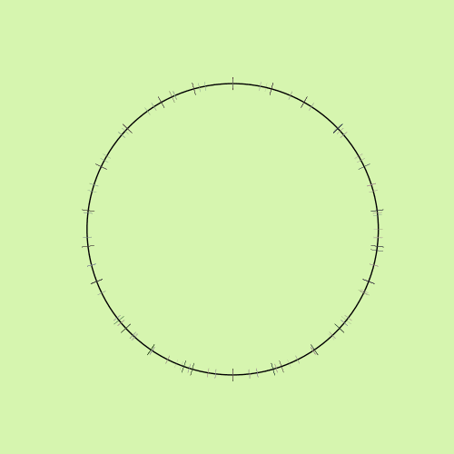
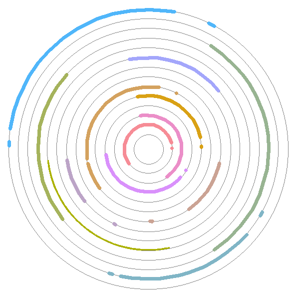
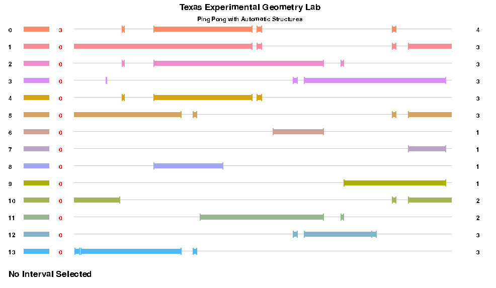

Ping Pong III: The Patching Algorithm
<
2 / 11 / 23
>
5 min read
Back in Spring of 2021, I started working in the Texas Experimental Geometry Lab (TXGL) at UT Austin.
I had worked on research projects before through REUs over the summer, but this was my first experience in a group focused on pure math. We produced a few results over the three semesters I worked with the group
and ended our project in the Summer of 2022 when several of us graduated.
Although we never completed a publication-worthy article, I'd still like to go back and share some of the cool problems I worked on that last semester to finish up my series of articles you can read here:
Assuming you're caught up on the first two iterations of the project, I'll start by discussing a visual problem we came across while debugging the algorithm for more complex groups.
Better RP1 Visualization
As you'll recall, visualizations of the RP1 intervals for small-ordered cyclic groups were fairly simple; there were only a few intervals and they didn't necessarily overlap very much. However, as we moved onto the (3,4,4) triangle group,
we found that making any sort of meaningful image would be more difficult since it would require at least 13 different intervals all overlapping one another. This would especially be an issue for even more complex groups we had in our sights.

A hard to see representation of a (3,4,4) triangle group
(13 disconnected, overlapping intervals with similar colors)
Luckily, I had just spent my winter break working a lot with color science. I created a tool that I describe in this article on Color Spaces and Even Color Spacing which
would be able to generate 'perceptually distinct' sets of colors we could use instead of the random colors we had been assigning to intervals previously.
The team also came up with a better way for viewing individual intervals by splitting them onto separate instances of RP1 (so they wouldn't overlap on the same circle) and then used a line representation of RP1 to stack all of them together nicely.
(We briefly played with putting the intervals on concentric copies of RP1, but this made it difficult to see which ones did in fact overlap).

An early test with each disconnected interval displayed on separate concentric copies of RP1

Cleaner representation of a (3,4,4) triangle group with distinct colors and parallel copies of RP1
Above is the final visualization tool we landed on to display more complex groups. In the application itself, you can click on the colored bars on the left to highlight where the images of other intervals end up inside of the selected interval
under the corresponding action in the group. The number of non-covered images is shown in red on the left and the number of components in each disconnected interval is shown on the right.
This tool was extremely helpful for debugging and focusing solely on the implementation of our new algorithm. I encourage you to clone the github repo and try it out for yourself by running the main.py file.
The Patching Algorithm
We left off the previous semester with the idea to try a sort of 'patching' technique for the images. We realized that if each interval needs to contain a certain set of images, the best approach would likely be setting the next iteration of the
interval to the union of all sets which 'barely cover' those images.
In mathematical terms, if must be contained in (where
and are intervals associated to nodes and of the automatic structure for the group and
is the action associated to the edge of the automata connecting and ), then we can define the iteration process:
, where
We can use this method because the generalized ping pong lemma doesn't require subsets to be connected. This has the advantage of expanding only to where we need instead of guessing some amount like with linear and geometric expansion. It does, however, limit the result of the lemma by
only guaranteeing that the kernel of the group action is bounded. This means that in addition to finding valid intervals with this method, we need to somehow calculate this bounding value and then check all group actions corresponding to words in the automatic structure up to some length
before claiming that the group acts faithfully.
We managed to compute this value, which is called , but the calculation is quite long so I encourage you to either read our article for more details or try running lambda.py in the repository for an example.
Whats Left
The summer following my last semester with TXGL, the team spent some time putting together an article in the hopes of publishing, but unfortunately couldn't complete one in the few months we had. The most immediate step would be to clean up the proofs in this article
and do some complexity analysis of the algorithm.
Beyond this, I'd like to see a version of this algorithm extended to higher dimensions which would require a new way of storing subsets of . The way I would likely approach this would be to store each as a set of points and then considering the set to be
the convex hull of those points. This would make it much easier to take unions of intervals and expand them.
I'm extremely grateful for the research opportunity provided by Jeff Danciger with TXGL, the help of Teddy Weisman throughout all three semesters, and my research partners Jordan Grant, Abhay Katyal, and Jeremy Krill.
Working with you all throughout this project was very rewarding and I'm thankful for the experience this gave me with mathematics research now that I've moved out of academia into software development.
Resources